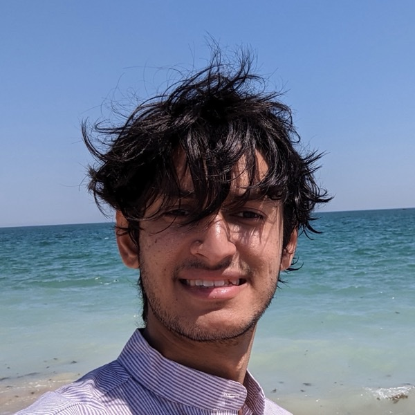

Kshitij Dubeyक्षितिज दुबे
PhD student, University of Utah
Formal methods, high-performance systems · reliable LLM reasoning
About
I am a PhD student at the University of Utah, where I started in 2026. Before that I was a Research Fellow at Microsoft Research India, advised by Rahul Sharma and Amit Sharma. Before that I was a software engineer on Amazon Aurora Storage. I did my undergrad in Electronics & Instrumentation at BITS Pilani, Hyderabad Campus (2018–2022). My interests are formal methods, high-performance systems, reliability for LLM reasoning, and causal inference.
Publications
Equivalence Checking of ML GPU Kernels
RE-IMAGINE: Symbolic Benchmark Synthesis for Reasoning Evaluation
DeDuCE: Deductive Consistency for Windowed, Step-wise Reasoning
Experience
Microsoft Research India
Research Fellow, advised by Rahul Sharma and Amit Sharma
- PTX-level equivalence checking for ML kernels: symbolic functional equivalence over reals, schedule-independent sync-safety, warp barriers and Tensor Cores; hardware profiling and simulation.
- RE-IMAGINE: symbolic rewrites and program mutations projected to natural language, evaluating models at Observation, Mutation and Imagination levels for process-faithful reasoning.
- DeDuCE: windowed, proof-style checks of step-wise deductive consistency that expose coherence decay hidden by final-answer accuracy.
- Built an agentic system for memory-corruption discovery in binaries that matched or beat DeepMind's Naptime architecture on Meta's CyberSecEval.
- Built benchmarks measuring LM performance loss across quantization frameworks at fixed total bit-width, and benchmarks quantifying compositional ability of LMs.
Stealth Startup
Member of Technical Staff
- Extended Go Protobuf codegen to statically type-check Neo4j graph constructs.
- Designed GraphQL APIs and optimized Cypher queries for production workloads.
Amazon Aurora Storage
Software Development Engineer
- Ported storage workloads to AArch64, improving price/performance with a projected $20M/yr in savings.
- Tuned jemalloc for C++ storage paths, raising CPU utilization within tight memory budgets.
- Led graph-model-based integration tests for failover and leader promotion, using TLA+ to surface control-plane bugs.
- Scaled certificate vending to 100k+ instances and automated OS/application patching within SLA.
Amazon Prime Video
SDE Intern
- Implemented order-status indicators across microservices; led API changes and integration tests.
- Initiated an invoicing migration with 20% lower storage and 30% lower latency.